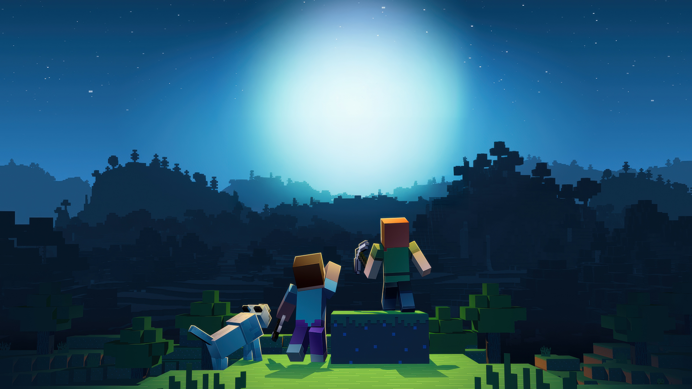
O que é o Minecraft ?
O Minecraft é um fenômeno global do gênero sandbox onde o mapa é composto por blocos pixelados interativos. Cada bloco representa um material do mundo real ou fantasioso como terra, pedra, madeira, ferro e redstone.
A proposta do jogo combina exploração, sobrevivência e criatividade sem limites: você pode desde erguer uma simples cabana de madeira para se proteger na primeira noite, até projetar circuitos automatizados e recriar cidades inteiras bloco por bloco.
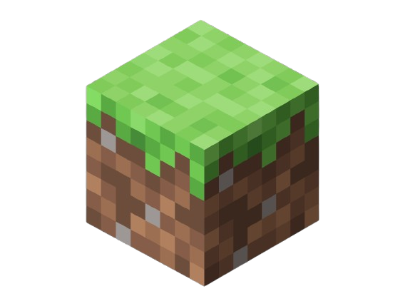
Modos de Jogo
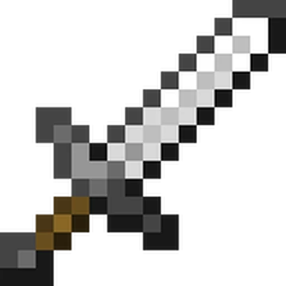
Modo Sobrevivência (Survival)
É a experiência clássica do jogo. Você precisa minerar recursos, cultivar alimentos e construir abrigos enquanto gerencia sua barra de vida e combate criaturas hostis que aparecem durante a noite.
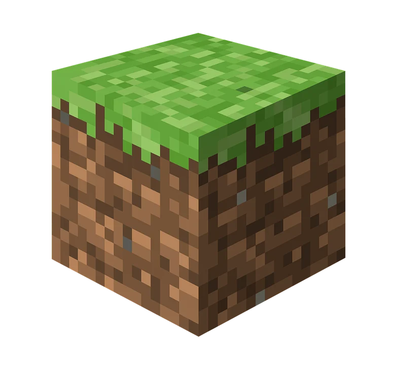
Modo Criativo (Criative)
É o espaço voltado para a construção livre. Você possui acesso a um inventário com todos os blocos do jogo, além de invencibilidade total e a habilidade de voar para criar sem nenhuma limitação.
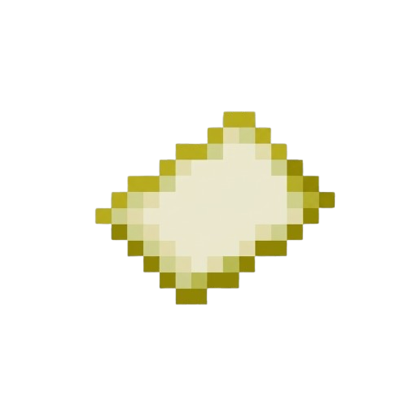
Modo Extremo (Hardcore)
É a versão mais desafiadora e punitiva do jogo. Mantém a dinâmica do modo sobrevivência, porém com a dificuldade travada no nível mais alto e com morte permanente: se você morrer, perde o mundo para sempre.

Modo Espectador (Spectator)
É uma ferramenta de exploração e câmeras. Permite voar sem restrições, atravessar blocos sólidos e observar cavernas, estruturas e outros jogadores de forma totalmente invisível e sem poder interagir.
Curiosidades do Minecraft
Minecraft é o jogo mais vendido da história, com mais de 300 milhões de cópias comercializadas. Seu mundo é gigantesco: ele pode se estender por até 60.000 km em linha reta, uma distância maior que a circunferência da Terra. Além disso, ele guarda segredos fascinantes sobre seus inimigos e mecânicas.
Creeper o monstro mais famoso do jogo foi um erro de programação. Notch estava tentando criar um modelo para um porco, mas inverteu as medidas de altura e largura, resultando na criatura verde e explosiva que conhecemos
Os sons assustadores que tocam aleatoriamente enquanto você explora minas escuras foram feitos pelo compositor C418. Muitos deles são, na verdade, gravações de piano tocadas ao contrário e distorcidas.
O famoso gato de estimação do criador do jogo, chamado Dinnerbone, inspirou uma mecânica secreta. Se você nomear qualquer mob no jogo com a tag "Dinnerbone" ou "Grumm", ele ficará de cabeça para baixo.
O primeiro nome do Minecraft era Cave Game. O criador, Markus "Notch" Persson, utilizava este nome durante as fases iniciais de desenvolvimento em maio de 2009, antes de batizar o projeto oficialmente como Minecraft.
Minecraft foi criado em menos de uma semana. Por mais que seja um dos jogos mais vendidos de todos os tempos, Minecraft foi criado às pressas — literalmente. No caso, o programador e designer Markus Persson trabalhou no título entre 10 de maio de 2009 e 16 de maio daquele mesmo ano. A versão alfa estreou no dia seguinte, no dia 17.
O Minecraft NÃO é infinito! Existe uma barreira invisível a 30 milhões de blocos do spawn que impede o avanço dos jogadores e começa a quebrar a física do jogo.
Axolotes foram introduzidos na atualização Caves & Cliffs, ajudam a matar guardiões no oceano e são praticamente invencíveis devido à sua habilidade de regeneração.
O time de desenvolvimento tinha a intenção de criar uma área que seria o oposto do Nether, denominada Sky Dimension (Dimensão do Céu). A ideia teria sido descartada, e seu código fonte originado o End (Fim).
Em 2014, Notch postou no Twitter que queria vender o Minecraft para "seguir a vida". A Microsoft atendeu ao pedido e desembolsou a bagatela de US$ 2,5 bilhões pela Mojang!
O que são os mods?
Mods são complementos que os fãs criaram para o minecraft, que adicionam coisas a mais que não existem no jogo.
Top 10 melhores mods do Minecraft
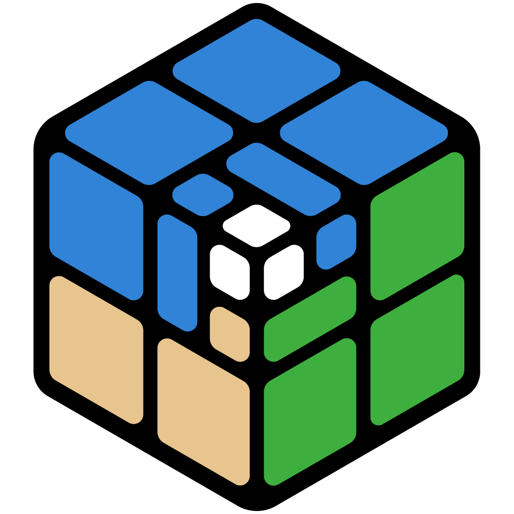
Distant Horizon
É um mod para Minecraft que permite enxergar centenas de blocos (ou chunks) à distância, mantendo um alto desempenho. Em vez de carregar totalmente o cenário distante, ele gera um terreno simplificado (LOD), criando a ilusão de um horizonte infinito sem travar o PC.
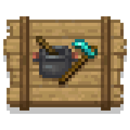
Farmer's delight
É um popular mod para Minecraft que expande significativamente o sistema de agricultura e culinária do jogo. Ele adiciona novas plantações, utensílios de cozinha, receitas complexas e mecânicas de solo, transformando a alimentação básica em uma experiência rica e imersiva.
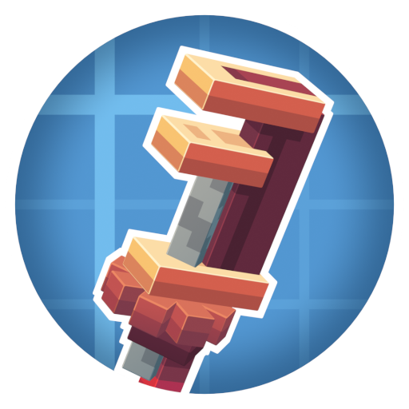
Create
É um popular mod de tecnologia para o Minecraft. Em vez de usar energia invisível ou eletricidade, ele se baseia em força e torque mecânico realistas. Você constrói engrenagens, eixos e correias giratórias para automatizar processos como mineração, plantio e construção.
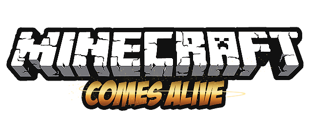
Minecraft Comes alive
É um dos mods mais populares do Minecraft. Ele transforma os aldeões genéricos do jogo em NPCs humanos interativos com nomes, personalidades e diálogos. O mod introduz elementos de RPG e simulação de vida, permitindo que você construa relacionamentos, case, tenha filhos e monte sua própria família virtual.
Cobblemon
É um mod gratuito de código aberto para o Minecraft que integra a experiência Pokémon ao jogo. Ele se destaca por usar modelos 3D com texturas em blocos que se harmonizam com a estética do Minecraft, permitindo capturar, batalhar e evoluir monstrinhos diretamente no seu mundo.
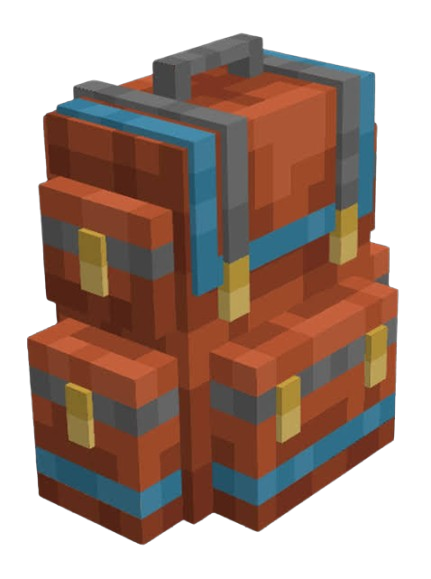
Sophisticated Backpacks
É um dos mods de armazenamento mais populares do Minecraft. Ele adiciona mochilas portáteis que não apenas expandem seu inventário, mas também automatizam tarefas como coletar itens do chão, fundir minérios e até alimentar seu personagem.
Terralith
É um dos mods de geração de terreno mais populares do Minecraft. Ele reformula completamente o mundo do jogo sem adicionar blocos novos usando apenas os blocos nativos (vanilla), o que significa que qualquer jogador pode entrar em um servidor com o mod sem precisar instalar nada no próprio PC.

Physics
É um dos mods mais impressionantes do Minecraft quando o assunto é imersão visual e realismo. Ele reescreve a física tradicional de blocos flutuantes e animações simples, adicionando dinâmicas reais ao jogo. Com ele, ao quebrar um bloco, ele se despedaça em dezenas de pequenos fragmentos em 3D que interagem com o chão.
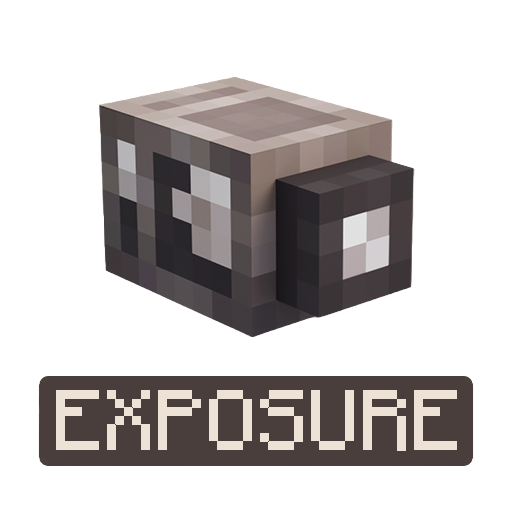
Exposure
É um mod incrível para quem ama registrar momentos no Minecraft com um toque de fotografia real e retrô. Ele adiciona ao jogo uma câmera fotográfica funcional que permite tirar fotos do seu mundo e salvá-las como imagens reais que você pode expor e usar de várias formas.

When Dungeons Arise
É um dos mods de exploração e aventura mais impressionantes do Minecraft. Ele transforma a geração do mundo ao adicionar uma enorme variedade de estruturas gigantescas e masmorras complexas, como templos misteriosos, fortalezas no ar e cidades piratas desertas.
Meus Melhores Momentos no Minecraft
Isso fala bastante sobre mim
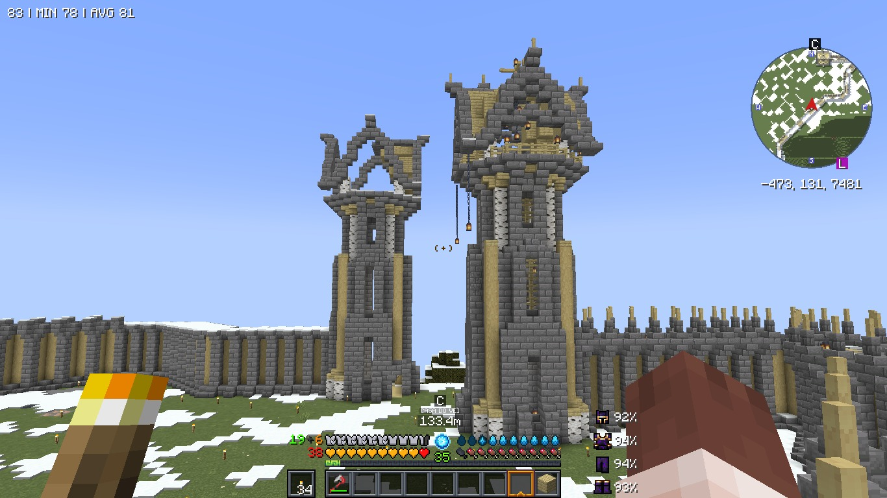
O Castelo & Torres Fortificadas
O apocalipse chegou e não podemos nos render a eles, esse muro será a nossa proteção.
Sistema Automático de Galinhas
Aquele momento em que o sistema industrial de ovos/galinhas funcionou perfeitamente no vidro!
Batalha no Rio
A guerra dos caídos foi uma época crítica no overworld. Eles ainda não tinham Iron Golems para salvá-los; foi uma era tenebrosa para os viventes.
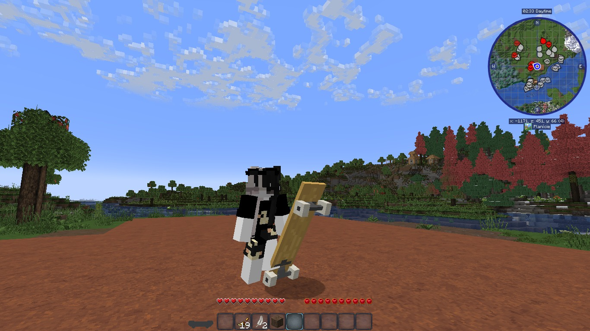
Rolezinho de Skate
Testando mod do skate e tirando aquela foto para nunca esquecer.
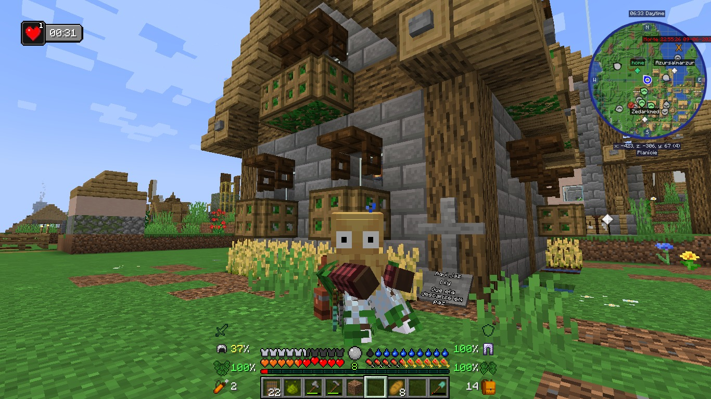
Homenagem à Lily
"Aqui jaz Lily, que ela descanse em paz." Morreu tão nova para um esqueleto.

Torre de Porcos
Uma pilha literal de porcos numa carroça. O tipo de mod que deixa tudo divertido!